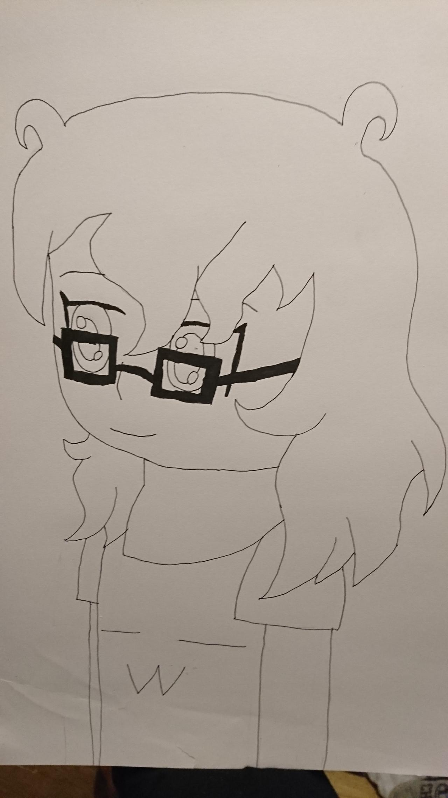
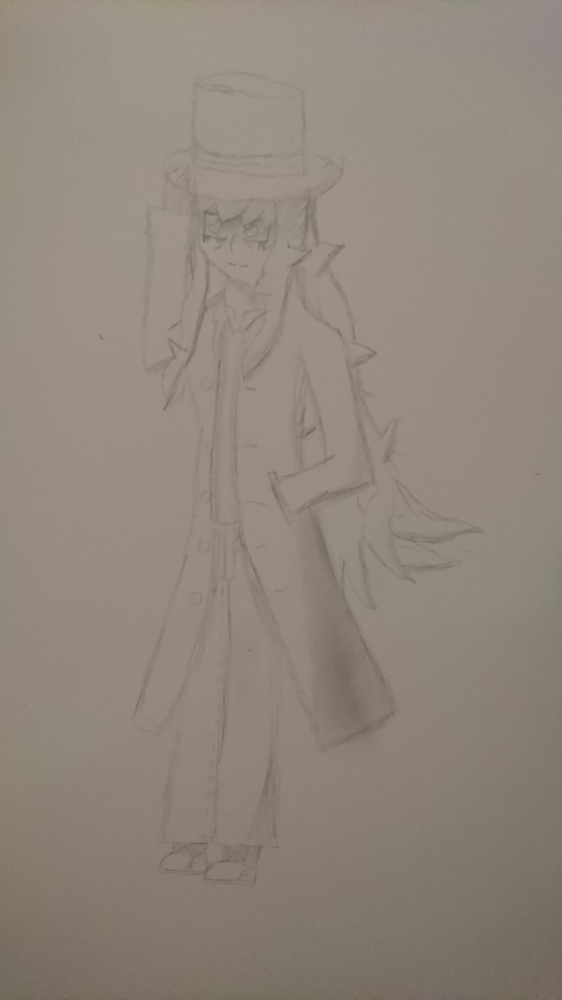

Tr�s bien alors je me pr�sente je suis Lucas Astier Alias Train pour les intimes je m'essaie � la programmation et je l'apprends en classe et aujourd'hui le devoir d'aujourd'hui est de faire un simple site internet.
 (Image cliquable)
J'ai actuellement 16 ans et le m�tier que je voudrais faire plus tard est programmeur car j'ai toujours �t� fascin� par ce que les programmeurs pouvaient faire C'est un peu pour �a que j'ai d�cid� de faire nsi
Mes principaux int�r�ts sont les jeux vid�os, le dessin et les anim�s.
Je ne me qualifierais pas de personne exc�ssivement s�rieuse mais j'essaie au moins donc �a c'est bien non ?
Ah aussi je suis un grand amateur de memes

Je dessine parfois mais �a ne reste pas foufou si vous en voulez un �chantillon bah voil� quoi.
Je crois que c'est tout pour la pr�sentation donc si vous voulez revenir au menu principal bah il faudra cliquer si le petit lien en dessous.